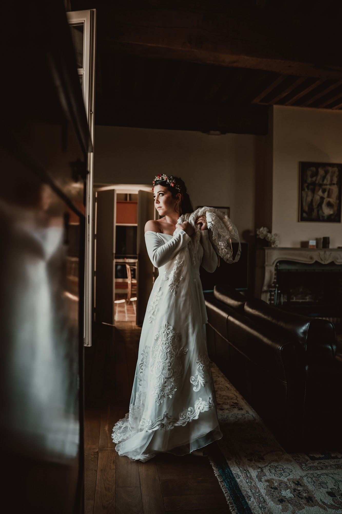
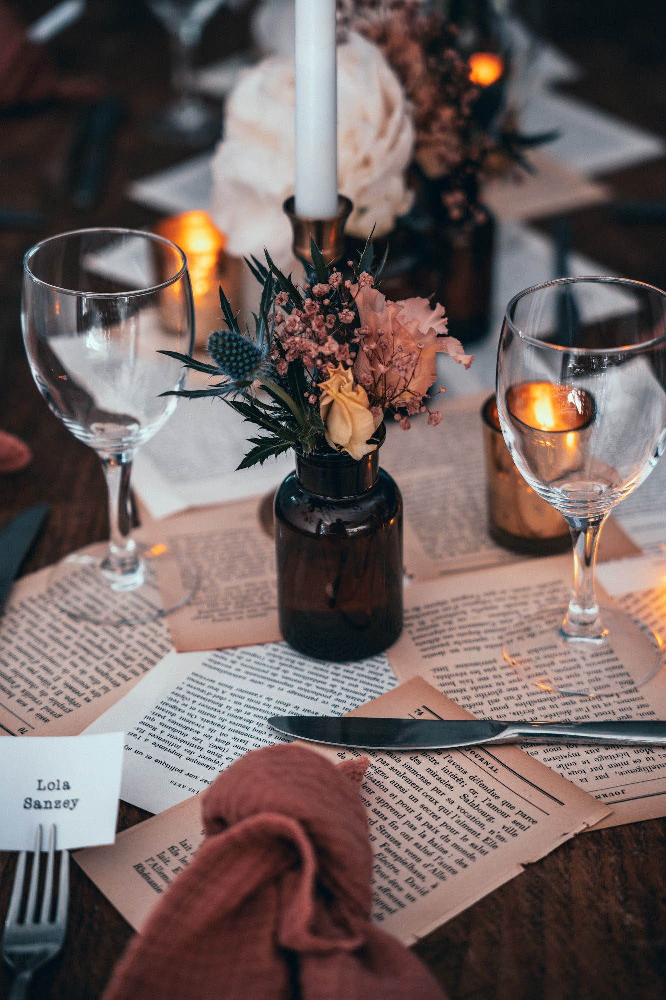
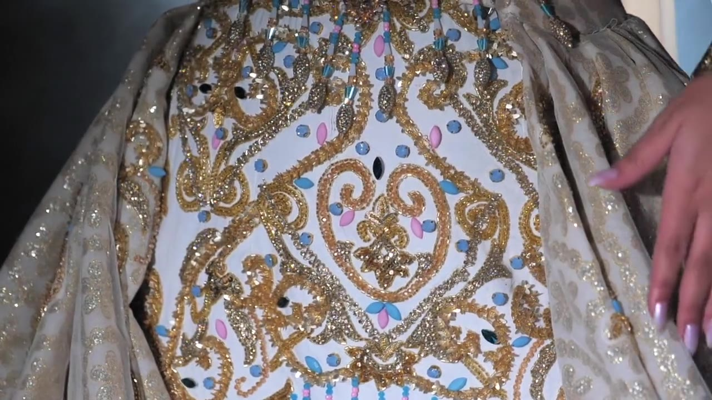
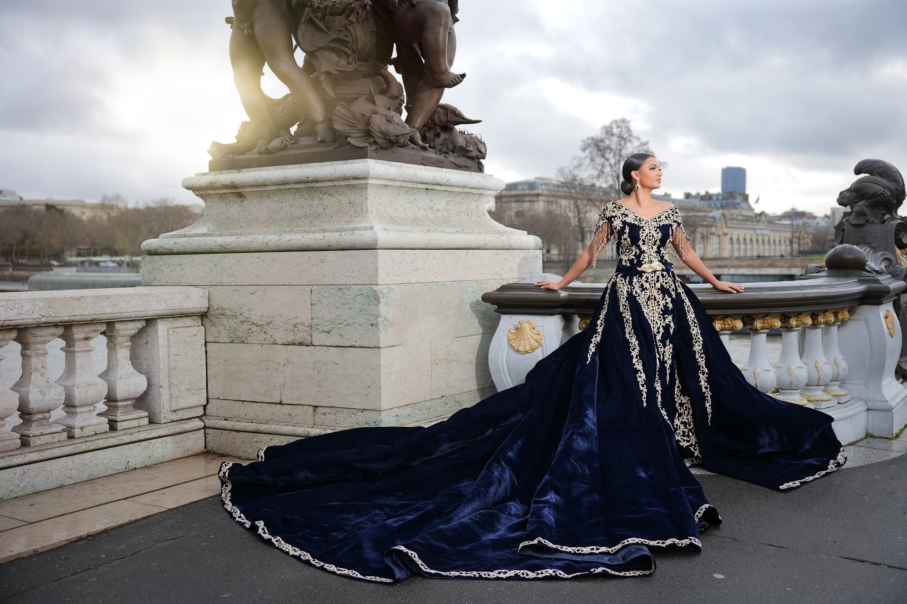
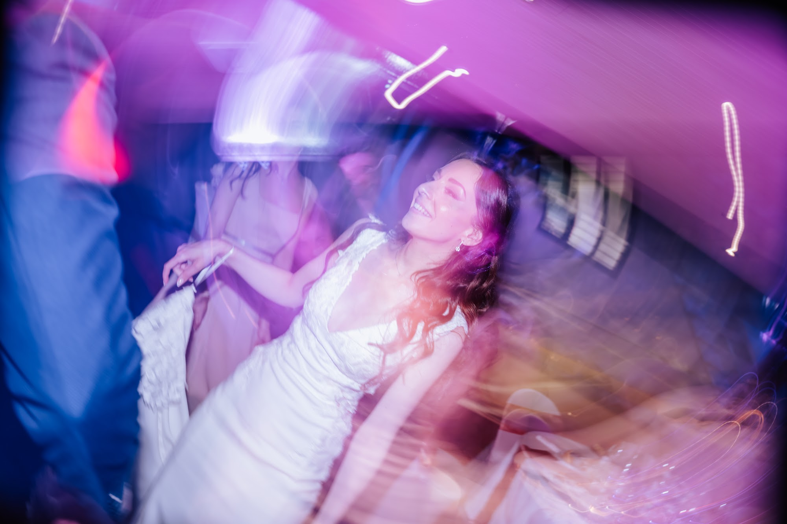

Votre photographe de mariage oriental à Lyon et en région
Être votre photographe de mariage oriental à Lyon signifie bien plus que capturer de belles tenues. C'est documenter l'héritage d'une famille, les gestes anciens transmis de génération en génération et l'énergie vibrante de vos célébrations. Mon approche reste toujours la même : capturer ces traditions avec élégance, discrétion et une lumière naturelle qui raconte votre histoire en toute authenticité.

L'essence d'un mariage multiculturel

Les célébrations qui mêlent différentes cultures possèdent une âme particulière. C'est la rencontre de deux familles, de deux histoires, et souvent de deux continents. Lorsque je photographie un mariage multiculturel, je suis toujours frappé par la richesse des échanges et la beauté des contrastes. Vous pouvez très bien organiser une cérémonie laïque dans les jardins d'un domaine du Beaujolais, puis faire vibrer les murs de la salle de réception au son des percussions traditionnelles.
Mon rôle est de créer un reportage cohérent qui lie toutes ces influences. Je cherche à capturer les regards de vos parents qui vous voient respecter leurs coutumes, tout en embrassant la modernité de votre couple. Que vous célébriez votre union dans le Rhône, en Isère ou en Savoie, je m'imprègne de l'atmosphère de votre journée. Je ne cherche pas à diriger ces moments, mais plutôt à les observer avec attention pour en restituer toute la sincérité. C'est dans ces instants de partage sincère que se trouvent les images les plus fortes.
La soirée henné : intimité et transmission

La soirée henné est un moment à part dans le processus d'un mariage oriental. Elle est souvent plus intime, rassemblant les femmes de la famille et les amies proches dans une ambiance chaleureuse. C'est un événement chargé de symboles, où les chants traditionnels accompagnent la pose du henné, censé apporter bonheur et prospérité. Je suis particulièrement sensible à la lumière de ces soirées, souvent éclairées à la bougie ou par des lumières tamisées qui créent une atmosphère feutrée.
En tant que photographe, je me fais le plus discret possible pour ne pas perturber cette intimité. Je me concentre sur les détails qui racontent l'histoire : les mains habiles de la nekacha qui dessine les motifs, les bijoux traditionnels qui tintent à chaque mouvement, les larmes de joie de votre mère. Les sourires échangés pendant cette soirée sont d'une douceur infinie. Documenter cette transmission entre les générations demande une grande sensibilité et une lecture attentive de la lumière pour conserver toute la chaleur de l'instant.
Mariage marocain ou algérien : photographier les détails
Le vêtement occupe une place centrale dans un mariage algérien ou un mariage marocain. Chaque tenue raconte une région, un savoir-faire artisanal et une part de votre identité. Le lourd velours d'un karakou, les broderies dorées d'un caftan, la délicatesse d'une chedda ou l'élégance d'une amira sont autant d'œuvres d'art qui méritent d'être photographiées avec soin. Je porte une attention particulière à la texture des tissus et à la façon dont la lumière accroche les fils d'or ou d'argent.
Cependant, je refuse de transformer votre reportage en catalogue de mode figé. Ces tenues sont faites pour être portées, pour bouger avec vous. Je préfère photographier le mouvement d'une traîne lorsque vous marchez vers vos invités, ou le détail d'une broderie lorsque votre époux vous prend la main. C'est la vie qui anime le vêtement qui m'intéresse. C'est ainsi que les matières prennent tout leur sens et que les photographies conservent une allure éditoriale et naturelle.

L'importance de la discrétion au cœur de la fête
Les célébrations orientales sont réputées pour leur énergie débordante. L'entrée des mariés sous les tambours d'une dakka marrakchia ou d'une zaffa est un moment d'une intensité rare. La musique est forte, les invités chantent, dansent, et la salle entière semble vibrer. Au milieu de cette effervescence, ma méthode de travail repose sur une discrétion absolue. Je me fonds parmi vos invités, je me déplace doucement pour anticiper les actions sans jamais barrer la route ou imposer ma présence.
Cette approche documentaire me permet de saisir des expressions vraies. L'éclat de rire de votre père au milieu de la piste de danse, l'étreinte spontanée avec votre sœur entre deux musiques. Je veux que vous puissiez revivre l'intensité de cette fête en regardant vos photos, sans vous souvenir de ma présence à ce moment précis. C'est un équilibre subtil entre être au cœur de l'action pour capter l'énergie, et rester en retrait pour laisser la spontanéité s'exprimer.

Des portraits élégants entre deux tenues
Un mariage maghrébin est souvent rythmé par de multiples changements de tenues. Ce rythme soutenu, souvent géré par une ziana ou une negafa, laisse parfois peu de répit aux mariés. C'est pourquoi j'aime voler quelques minutes de calme à chaque nouvelle parure. Dès que vous êtes prêts, nous prenons un court instant, à l'écart du bruit, pour réaliser quelques portraits. Ces respirations sont essentielles pour vous retrouver à deux.
Pour ces portraits, je privilégie toujours une approche naturelle. Je vous guide pour trouver une belle lumière, souvent près d'une fenêtre de votre lieu de réception ou dans une allée ombragée des Monts d'Or, mais je ne vous fais pas prendre de poses figées. Je vous invite simplement à interagir, à vous parler, à vous enlacer. Le résultat donne des images élégantes, à l'esthétique éditoriale, qui mettent en valeur vos tenues tout en gardant l'authenticité de vos émotions.

La lumière au service de votre mariage oriental à Lyon
La maîtrise de la lumière est le défi technique majeur des réceptions de grande ampleur. Les salles de mariage capables d'accueillir des centaines d'invités dans l'Ain ou la Drôme sont souvent vastes et plongées dans la pénombre une fois la nuit tombée. Les éclairages d'ambiance, les lasers ou les projecteurs colorés du DJ créent une atmosphère festive, mais nécessitent une approche photographique rigoureuse pour conserver des tons de peau naturels et une colorimétrie élégante.
J'utilise le matériel et les techniques nécessaires pour sculpter la lumière sans dénaturer l'ambiance que vous avez choisie. Je m'appuie au maximum sur la lumière disponible pour retranscrire fidèlement l'atmosphère de votre soirée. Lorsque cela est indispensable pour figer le mouvement des danseurs, j'ajoute un éclairage discret qui se fond dans l'environnement. Vos images de soirée gardent ainsi cette chaleur et cette élégance qui caractérisent l'ensemble du reportage.

Un héritage visuel pour votre famille
À la fin de la journée, lorsque la musique s'arrête et que les tenues sont rangées, ce sont les photographies et la vidéo qui restent. Elles deviennent le témoignage de ces traditions que vous avez choisies d'honorer et de transmettre. Ces images ne sont pas seulement pour vous. Elles sont pour vos parents qui y verront la continuité de leur histoire, et pour les générations futures qui découvriront comment vous avez célébré votre amour.
C'est cette dimension patrimoniale qui donne tout son sens à mon travail. Prendre le temps de photographier avec justesse la main de votre grand-mère posée sur votre épaule, l'éclat de vos tenues traditionnelles et la ferveur de vos invités est un privilège. Je mets un point d'honneur à vous livrer un reportage intemporel, que vous aurez le même plaisir à regarder dans de nombreuses années.

Questions fréquentes
Comment gérez-vous les nombreux changements de tenues lors d'un mariage oriental ?
Je m'adapte au rythme intense de votre journée en travaillant en étroite collaboration avec vos prestataires. À chaque changement de tenue, je prévois une courte session de cinq minutes pour réaliser des portraits élégants et naturels avant votre retour en salle.
Proposez-vous des formules adaptées pour couvrir la soirée henné et le mariage ?
Je propose des accompagnements sur mesure pour couvrir plusieurs jours de festivités. Il est tout à fait possible d'organiser ma présence pour documenter votre soirée henné en toute intimité, puis la grande réception le jour de votre mariage.
Travaillez-vous avec des caméramans pour filmer un mariage maghrébin ?
Je propose moi-même des services de vidéaste pour capturer l'énergie et les discours de votre événement. Si vous souhaitez à la fois la photographie et la vidéo, je peux venir accompagné d'un second professionnel de confiance avec qui j'ai l'habitude de travailler en parfaite synchronisation.
Comment photographiez-vous les mariages multiculturels avec des traditions différentes ?
Mon approche est avant tout documentaire et basée sur l'observation. Avant le mariage, nous prenons le temps de discuter de chaque tradition et de sa signification pour vous, afin que je puisse anticiper les moments clés et les capturer avec tout le respect qu'ils méritent.
Si vous souhaitez échanger sur les traditions que vous prévoyez d'honorer lors de votre grand jour, parlons de la façon dont nous pouvons les documenter avec élégance.
Parlons de votre projet